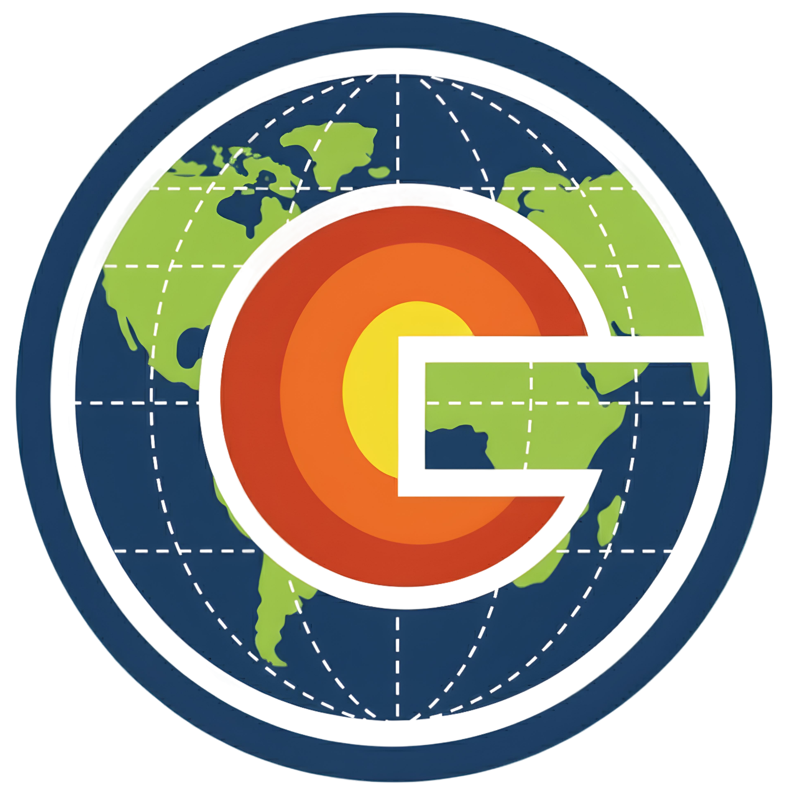
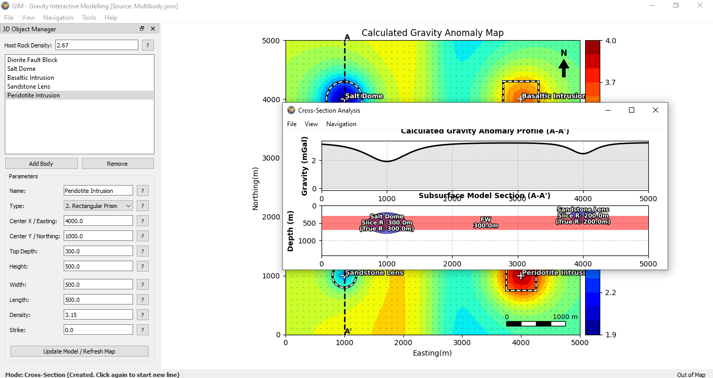

I am a Geophysics Engineering graduate (2022–2026) from UPN "Veteran" Yogyakarta, graduating with Cum Laude honors (3.67 GPA). I have a profound interest in the integration of earth sciences and computer science (computational geophysics).
My primary focus is designing and developing scientific software to efficiently solve geophysical modeling problems. I am committed to producing ready-to-use software with computational methodologies that are transparent, validated, and scientifically accountable. I believe that scientific instruments should be accessible to all, which is why all the software I develop here is provided completely free of charge.

Interactive modeling software for synthetic gravity anomalies. Designed as an educational instrument with an intuitive Graphical User Interface (GUI) to bridge the gap between theoretical formulas and practical interpretation.
Key Features:

Computational Methodology: The calculation engine utilizes high-precision analytical solutions. For spherical geometries, it implements the Telford et al. (1990) formula. For rectangular prisms, it employs the Plouff (1976) closed-form solution in Arctan form to ensure superior numerical stability and avoid singularities.
Recommended Specifications: Windows 10/11 (64-bit) | Intel Core i3 / AMD Ryzen 3 | 4 GB RAM | 1366 x 768 Display | 500 MB Disk Space
The next desktop software project is currently in the computational design phase. It will be announced on this page soon.
All software on this page is provided 100% free without any feature limitations. If these tools help your research or work, consider supporting their continued development. All support can be done completely anonymously.
☕ Support via Ko-fi 🪙 Support via Saweria